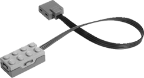

Indica a inclinação (de 0 a 4) detectada pelo sensor de inclinação LEGO WeDo

inclinação informa um valor de 1-4 quando o sensor está inclinado, e 0 quando não está.
O sensor de inclinação informa um número de 0 a 4. 0 significa sem inclinação, 1 inclinação para baixo, 2 inclinação para a direita, 3 inclinação para cima e 4 inclinação para a esquerda.
Para ver o valor da inclinação, marque a caixa de seleção ao lado do bloco na paleta.

Para usar inclinação, você precisa de um sensor de inclinação conectado ao computador por meio de um hub LEGO WeDo.
